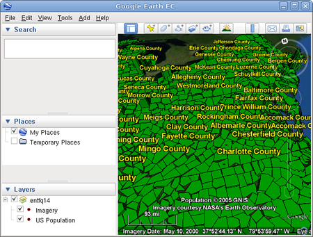

Google Earth Enterprise Documentation Home | Fusion tutorial
Importing and Exporting Style Templates
Often when you define the display rules for one set of data, you can use the same display rules (sometimes with minor tweaking) for other similar sets of data. In fact, to make your data look consistent across different layers, you probably want to use the same display rules. To do so, you can simply export as a style template the display rules you want to reuse and then import that style template into other projects.
For example, if a project contains two resources with different providers, and you want the data to look the same except for the copyright information, you can define the display rules for one resource, export the display rules as a template, and then import the template for the other resource. Another example is that you might want to define display rules for a small set of data and then use those same rules on a larger set of data. There are many more circumstances in which you can save time by using style templates.
This lesson guides you through the process of defining display rules for a small set of data (the state of California) and then exporting those rules as a style template. In a subsequent exercise, you import that same style template for a larger set of data (the entire US). Since you already defined display rules for population by county in the state of California in the last chapter, most of the work is already done.
Note: If you have not completed Configuring Display Rules for Polygon Data, you must complete at least the first three exercises in that lesson (Define and Build a Vector Resource Using Polygon Data, Define, Configure, and Build a Vector Project, and Define and Build an Imagery Project) before continuing with this lesson.
- Export the Display Rules
- Import the Template
- Define, Build, Push, and Publish a Database for Your Data
- View Your Data in Google Earth EC
Export the Display Rules
- Select Asset Manager from the Tools menu.
The Asset Manager appears.
- Navigate to the
/ASSET_ROOT/Projects/Vectorfolder you created in Configuring Display Rules for Polygon Data. - Double-click CACountyPopulation to open it in the Vector Project Editor.
- Right-click CACountyPopulation, and select Export Configuration as Template from the context menu.
The Export Template dialog appears.
- Navigate to your home folder, and click to create a new folder; name the new folder templates.
- Open the templates folder, enter Counties in the File name field, and click Save.
You return to the Vector Project Editor.
- Close the Vector Project Editor.
Import the Template
This exercise walks you through importing the template you created in the previous exercise into a new project.
To define a project and import a template:
- Click
 on the toolbar. The Vector Project Editor appears.
on the toolbar. The Vector Project Editor appears. - Click
 . The Open dialog appears.
. The Open dialog appears. - Navigate to the
ASSET_ROOT/Resources/Vectorfolder. - Select USPopulation, and click Open.
The US Population resource appears in the Vector Project Editor.
- Right-click USPopulation, and select Import Configuration from Template from the context menu.
The Import Template dialog appears.
- Navigate to the folder where you saved the template in the previous exercise.
- Select Counties.khdsp.
- Check the box next to Apply display rules but not Apply legend settings at the bottom of the dialog.
If you check the box next to Apply legend settings, this step would apply all of the legend settings for the project from which the template was created to this project, including changing the name of the layer. (See Chapter 5 in the Google Earth Enterprise Fusion Reference Guide for details about these settings.)
- Click Open.
You return to the Vector Project Editor.
- Right-click USPopulation, and select Layer Properties from the context menu.
The Layer Properties dialog appears.
- Click Off next to Initial State to change it to On.
Changing the initial state to on results in the US Population layer being automatically checked (turned on) in Google Earth EC.
- Right-click USPopulation, and select Configure Display Rules from the context menu.
The Configure Display Rules dialog appears.
- Set Max Resolution Level to 14 (or to 12 if you want to save some time).
Tip: Leaving the level set at the default, 18, results in unduly long processing time.
- Click OK.
You return to the Vector Project Editor.
- Select File > Save.
The Save dialog appears.
- Navigate to the
ASSET_ROOT/Projects/Vectorfolder. - Enter USPopulation as the name of your project.
- Click Save.
The new project appears in the Asset Manager when you select ASSET_ROOT/Projects/Vector in the asset navigation tree.
Define, Build, Push, and Publish a Database for Your Data
This exercise walks you through the process of defining, building, pushing, and publishing a database using the projects you created in the previous exercise.
To define, build, and push a database:
- Click
 on the toolbar. The Database Editor appears with no projects selected.
on the toolbar. The Database Editor appears with no projects selected. - Click next to Vector Project. The Open dialog appears.
- Navigate to
ASSET_ROOT/Projects/Vector. - Select the USPopulation project, and click Open. The US Population project appears in the Database Editor next to Vector Project.
- Repeat steps 2 through 4 to add BlueMarble as the imagery project. You do not need to add a terrain project for this exercise. Both projects appear on the list.
- Select File > Save.
- Navigate to the
ASSET_ROOT/Databasesfolder. - Enter USPopulation for the name of your database, and click Save.
The name of the database appears on the right when you select the
/ASSET_ROOT/Databasesfolder in the asset navigation tree. - Right-click USPopulation, and select Build from the context menu.
Google Earth Enterprise Fusion builds the database. The build process might take a little longer than it has for previous databases, because it is building the project as well, since you did not build the project at the end of the previous exercise.
- Right-click USPopulation, and select Push from the context menu. The Push Database dialog appears.
- Select the server association on the Server Associations drop-down list. The most recent version of the selected database is the default selection on the Version drop-down list.
- Click Push.
Google Earth Enterprise Fusion runs the process of pushing the database to the Google Earth Enterprise Server, and displays a success message when it is done.
To publish a database:
- Access the Google Earth Enterprise Server Admin console in a browser window by going to myserver.mydomainname.com/admin, replacing myserver and mydomainname with your server and domain.
- Sign in with the default credentials:
- Username: geapacheuser
- Password:geeadmin
- Click Databases to display the list of databases pushed to the Server.
- Check the box next to the database you want to publish. The Publish button on the Databases page appears.
- Click Publish. The Publish dialog appears.
- Specify a Publish point, where the database will be accessible from. For example, if you specify USPopulation-v001, it will be accessible from myserver.mydomainname.com/USPopulation-v001.
To learn more about the options available in the Publish dialog, see Create Search Tabs, Snippet profiles, and WMS.
- Click Publish. The Databases page updates to indicate the published status of your database.
View Your Data in Google Earth EC
This exercise walks you through the process of building, publishing, and viewing your database in Google Earth EC.
To build, publish, and view your database:
- Launch Google Earth EC.
The Select Server dialog appears.
- Enter or select the host name or IP address of your server in the Server field, and specify the Publish point that you selected when you published your map database. For example, if you specify USPopulation-v001, it will be accessible from myserver.mydomainname.com/USPopulation-v001.
- Click Sign In.
Caution: If you have logged in to this server with Google Earth EC previously, log out, clear your cache, and log back in. See clearing your cache.
- Zoom in until you can see part of the US.
- Turn and tilt the Earth so you can see the heights of the counties.
Google Earth EC displays all of the counties in the US labeled with the names of the counties. The closer you zoom in, the more spread out the counties look and the more county names you can see. As with the database you created in Configuring Display Rules for Polygon Data, each county’s height indicates its relative population. Counties with higher populations are taller, and counties with lower populations are shorter.
Note: If you cannot see the vector data, make sure the check box next to US Population in the Layers panel is checked.
If this were a real project, you might decide that displaying the names of the counties makes this view too cluttered. You can go back into the vector project, modify the display rules, rebuild and publish the database, and then view your data in Google Earth EC again. Repeat this process as many times as required to get the result you want.
